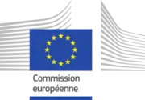
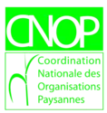
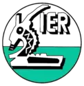
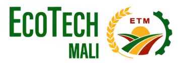
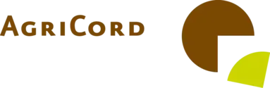

UNCPM
Rejoignez l'UNCPM pour un avenir agricole durable
L'UNCPM soutient les agriculteurs maliens en favorisant l'innovation et la coopération. Ensemble, transformons l'agriculture pour un avenir durable
🌱 Rejoindre
-
18
Coopératives membres
-
15000
adhérents et plus
-
08
regions couvertes
Notre mission et nos objectifs
-
Défense des intérêts des membres et partenariats
Défendre les intérêts des planteurs et maraîchers et établir des partenariats efficaces avec les membres, le gouvernement et d'autres acteurs
-
Solutions aux problèmes agricoles
Apporter des solutions aux défis agricoles (terres, semences, eau, équipements, etc.) pour améliorer la production
-
Promotion et développement des membres
Promouvoir les coopératives membres et offrir des formations pour renforcer l'esprit coopératif
-
Commercialisation et transformation des produits
Assurer la vente, la transformation et la conservation des produits des membres
-
Amélioration de la production
Diffuser des technologies pour améliorer la production et la productivité des membres
-
Innovation horticole et soutien
Promouvoir l'agro-écologie, diffuser des innovations, et accompagner les jeunes et femmes horticulteurs

Projet FORI
Le projet FO-RI (Farmers' Organizations Leading Research and Innovation on Agroecology) vise à renforcer la production paysanne de semences maraîchères adaptées aux pratiques agroécologiques au Mali. Il s’appuie sur l’innovation, la recherche-action et la mise en réseau des producteurs pour assurer une agriculture durable et résiliente.
📥 En savoir plus (Télécharger le PDF)Rejoignez le mouvement des planteurs et maraîchers du Mali
Ensemble, développons une agriculture durable, innovante et solidaire. Devenez membre de l’UNCPM et participez à la transformation du secteur agricole au Mali.
🌱 Devenir membreContact
-
Mme DIALLO M'Bodji SENE
Presidente du C.A
-
M. Adboulaye Bamba
Directeur des Services Techniques
-
Mr Hamidou TRAORE
Assistant en Animation des Coopératives
Nos partenaires
- 
- 
- 
- 
- 